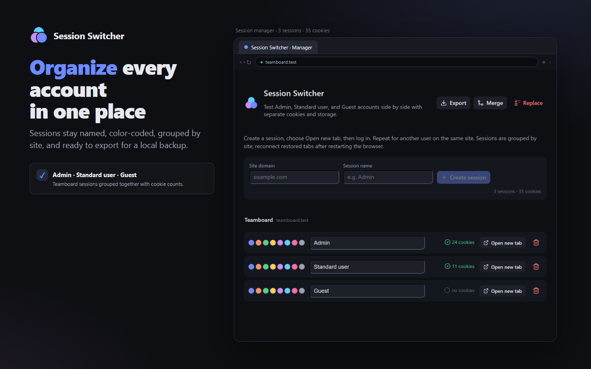
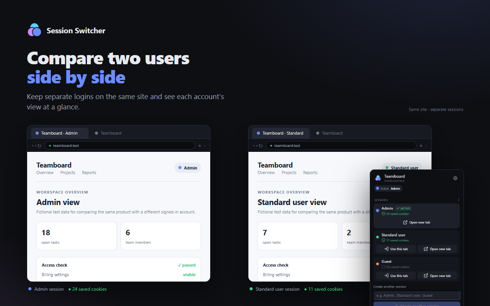
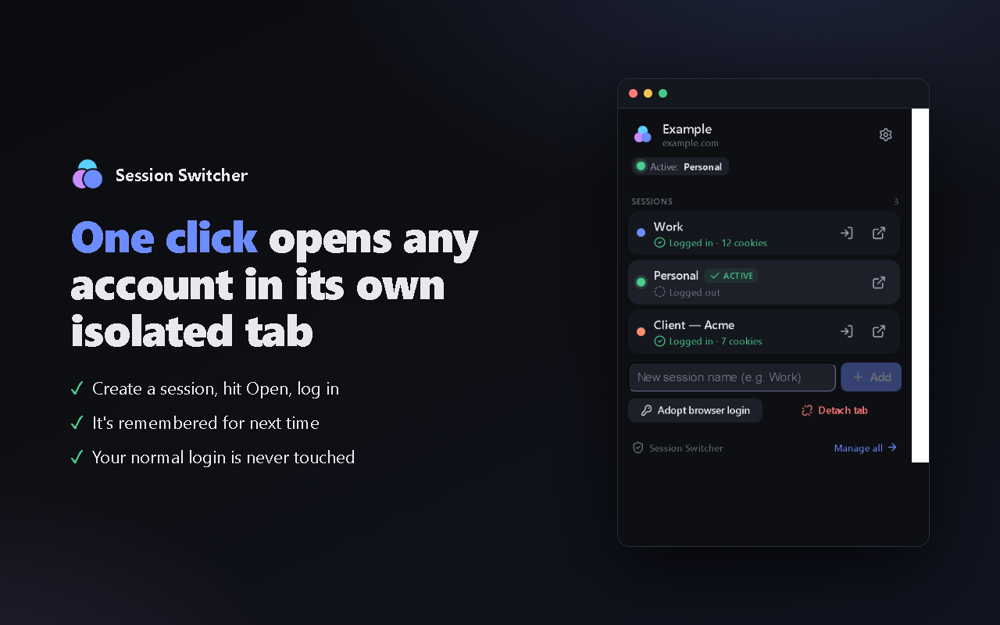
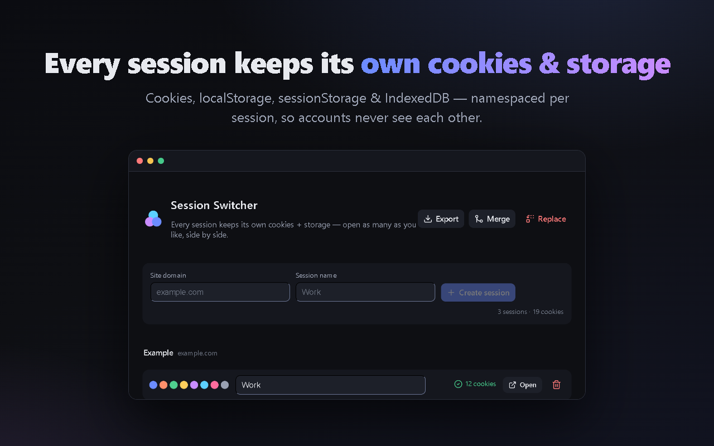

Name the test user
Create a session such as Admin or Standard user from the toolbar popup.
Multi-session testing for Chromium
Keep Admin, Standard user, Guest, and support accounts open side by side. Session Switcher gives each managed tab its own cookies and web storage, so QA teams can compare real user journeys without logging in and out.
Free, local-first, open source. Chromium browsers only.
A repeatable QA loop
Set up the same test once, then inspect each account without destroying the state of the others.
Create a session such as Admin or Standard user from the toolbar popup.
Choose Open new tab or reload the current tab with Use this tab, then sign in normally.
Create another session and compare permissions, logout behavior, and user journeys side by side.
Built for real test work
Keep a stable set of test identities available while you debug. Name and color-code sessions, group them by site, and export a local backup when you need to move a test setup.




Know the boundaries
Sessions are scoped to a site/domain. After a browser restart, reconnect restored tabs before using them. Cross-domain SSO can behave differently because identity providers use their own domains.
Managed tabs disable site service workers so their requests cannot bypass tab-level isolation. That can affect offline cache and web push. This extension is not a security sandbox or a replacement for separate browser profiles.
Read the technical architectureReady for the next test run?
Install the extension, create Admin and Standard user sessions, and run your first parallel scenario in minutes.